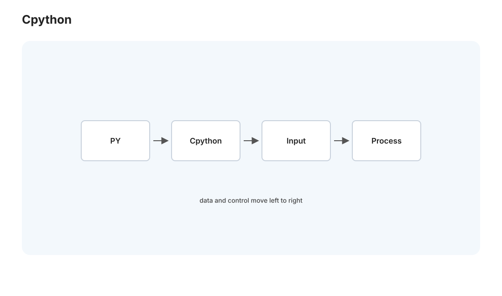
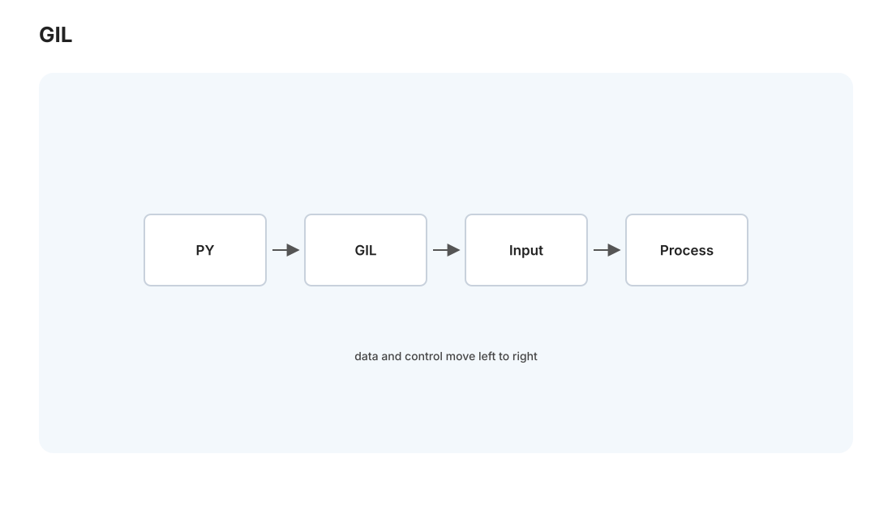
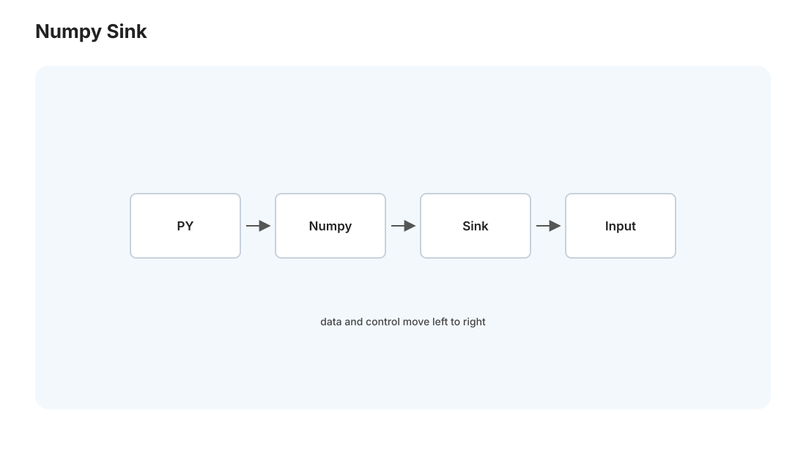

本页目录
Python II · 运行时、GIL 与性能生态
对标：CPython 内部 / Fluent Python 并发章 / High Performance Python ｜ 前置：py-01、comp-02（字节码/解释器）、par 线（并发）、mlsys 线 py-01 讲 Python 的抽象，这一页讲它的运行时真相：CPython 怎么执行你的代码、为什么 Python"慢"、GIL 如何限制多线程并行（每个 Python 程序员迟早撞上的墙）、以及生态怎么补救（numpy 把热点降到 C、async 处理 I/O 并发、多进程绕开 GIL）。这决定了你在 Medusa 里该怎么选并发模型、什么时候 Python 够用、什么时候要下沉到 C/换语言。
1. CPython 怎么跑你的代码

你写的 .py 不是直接执行的。CPython（最主流的实现）分两步（🔗 comp-02 的"字节码 + 虚拟机"）：
1. 编译成字节码：.py → 一串字节码指令（.pyc 缓存）——这是编译，不是机器码。
2. 字节码解释器执行：一个大循环逐条取字节码、执行——这就是 Python"慢"的根源：每条操作都要经过解释器的分发、每个对象都是堆上的装箱对象（int 也是对象，带引用计数 + 类型信息）、动态类型意味着每次操作都要运行时查类型。
"慢"的量级：纯 Python 数值循环比 C 慢约 50–100 倍——因为 C 直接在寄存器上算，Python 每步都在解释 + 装箱。但这不是 Python 的失败——它用运行速度换开发速度和灵活性，且热点可以下沉（第 4 节）。理解"Python 慢在解释 + 装箱 + 动态"，你就知道该在哪优化（把热循环交给 numpy/C，而非用纯 Python 硬扛）。
内存管理：CPython 用引用计数为主 + 分代 GC 补充（🔗 pl-02）——对象引用归零立即回收（及时、可预测），循环引用靠周期性 GC 清。所以 Python 里"什么时候释放内存"比追踪式 GC 更可预测，但引用计数的更新有开销、且是 GIL 的一个原因。
2. GIL：多线程并行的墙

全局解释器锁（GIL）是每个 Python 程序员的必修痛点——CPython 同一时刻只允许一个线程执行 Python 字节码。即使你开 8 个线程、机器有 8 核，CPU 密集的 Python 多线程也只用得上一个核（线程们轮流拿 GIL）。
- 为什么有 GIL：简化 CPython 实现 + 保护引用计数不被并发破坏（否则每个对象都要加锁，更慢）。它是历史 + 实现权衡的产物。
- 后果：
- CPU 密集任务（纯 Python 计算）：多线程无并行加速，甚至因锁竞争更慢（🔗 par-01 Amdahl 的极端——串行部分是整个解释器）。
- I/O 密集任务：多线程有效——因为线程等 I/O 时释放 GIL，别的线程能跑。所以"多线程做并发下载/请求"在 Python 里是可行的。
这直接决定 Medusa 的并发选择： - 等数据库、等 DeepSeek API = I/O 密集 → async 或多线程都行（GIL 不碍事，等待时释放）。 - 本地跑 embedding、大量数值计算 = CPU 密集 → 多线程没用，要多进程或下沉到 C/numpy（下节）。
3. 三条绕开 GIL / 提速的路
- 多进程（multiprocessing）：每个进程有自己的解释器 + GIL——真正并行用满多核，代价是进程间通信要序列化（pickle）+ 内存不共享（🔗 os-01 进程 vs 线程、par-01 消息传递）。CPU 密集的 Python 并行正道。
- 异步（asyncio）：单线程事件循环处理海量 I/O 并发（🔗 web-02 的 async 深入）——
async def/await，遇 I/O 挂起去干别的。高并发 I/O 的首选，比多线程更省资源。FastAPI（Medusa 后端）就是它。 - 下沉到 C（最重要）：把热点交给 C 扩展——这些库在 C 层释放 GIL、直接操作连续内存：numpy（向量化数值）、pandas、以及你的 pipeline 里的 sentence-transformers/torch。"用 Python 写胶水、用 C 库做重活"是 Python 高性能的标准姿势（下节展开）。
近况一提：Python 3.13 开始有实验性无 GIL 构建（free-threading）——长期可能移除 GIL 限制，但生态适配需时间。了解趋势即可，当下仍按上述三路走。
4. 生态：Python 慢，但它的 C 底座不慢

Python 之所以统治数据科学/AI，不是因为快，而是因为它是一层友好的胶水，底下挂着高度优化的 C/Fortran/CUDA 库：
- numpy：向量化数组运算——一个 a * b（数组）在 C 层用连续内存 + SIMD（🔗 perf-01）算完，比 Python 循环快几十上百倍。诀窍是别写 Python 循环，写数组操作（把循环下沉到 C）。
- pandas / polars：数据框，列式 + 向量化（🔗 db-02 列存、perf-02）。
- PyTorch / JAX：张量运算 + autodiff，底下是 CUDA（🔗 gpu 线、mlsys 线）——你的 embedding 生成、模型推理全靠它们把重活丢给 GPU。
- Cython / C 扩展 / ctypes / PyO3(Rust)：把你自己的热点函数写成编译语言。
方法论：Python 性能优化的第一原则是"下沉热点"——用 profiler（cProfile）找瓶颈，把热循环改成 numpy 向量化操作或 C 扩展，让 Python 只当调度层。对 Medusa：数据处理用 pandas/numpy 向量化而非 Python 循环；真要极致性能的小热点，可考虑 Rust 写扩展（🔗 rust 线，PyO3 让 Rust 无缝当 Python 库）。
5. 打包与依赖：Python 的另一个痛点
Python 的依赖管理是出了名的乱（🔗 csapp-03 动态链接、cloud-01 容器的动机之一就是治它）：
- 虚拟环境：venv/conda 隔离每个项目的依赖——别往全局装（你的课程站都用独立 venv，正确）。
- 依赖锁定：requirements.txt/pyproject.toml + lockfile 固定版本——保证可复现（🔗 se-02、sec-02 供应链）。
- 现代工具：uv/poetry/pip-tools 让依赖管理更可靠。
- 容器化终极方案：把 Python + 依赖打进 Docker（🔗 cloud-01）——彻底消除"环境不一致"，Medusa 的 Postgres 已容器化，应用层同理可控。
6. 练习与要点
例 1（GIL 实证） 写一个 CPU 密集函数（如大量纯 Python 求和），分别用单线程、多线程（4 线程）、多进程（4 进程）跑，测时间——多线程不加速甚至更慢、多进程才快，GIL 的墙亲眼可见。再换成 I/O 密集（sleep 模拟），多线程就有效了。
例 2（numpy 下沉） 同一个数组运算用 Python 循环 vs numpy 向量化，测加速比（几十倍起）——理解"把循环下沉到 C"为什么是 Python 性能的正道。Medusa 数据处理直接可用。
例 3（选并发模型） 给 Medusa 三个任务（并发调 100 个 DeepSeek API、本地算 1 万条 embedding、并发查数据库）各选 async / 多进程 / 多线程——把"I/O 密集用 async、CPU 密集用多进程"的判断用到真实系统。\(\blacksquare\)
下一页：C++ I——抽象、RAII 与值/移动语义：一门"零成本抽象"的系统语言，如何在贴近硬件的同时提供高级抽象。